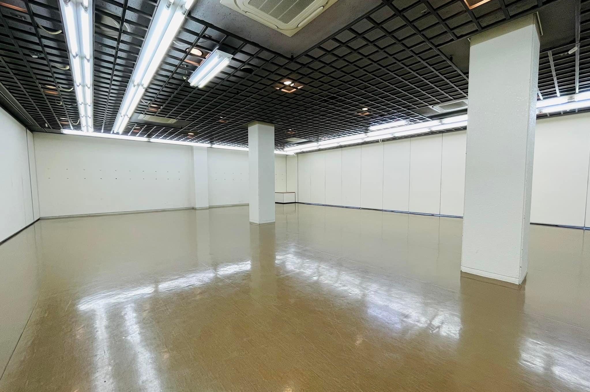
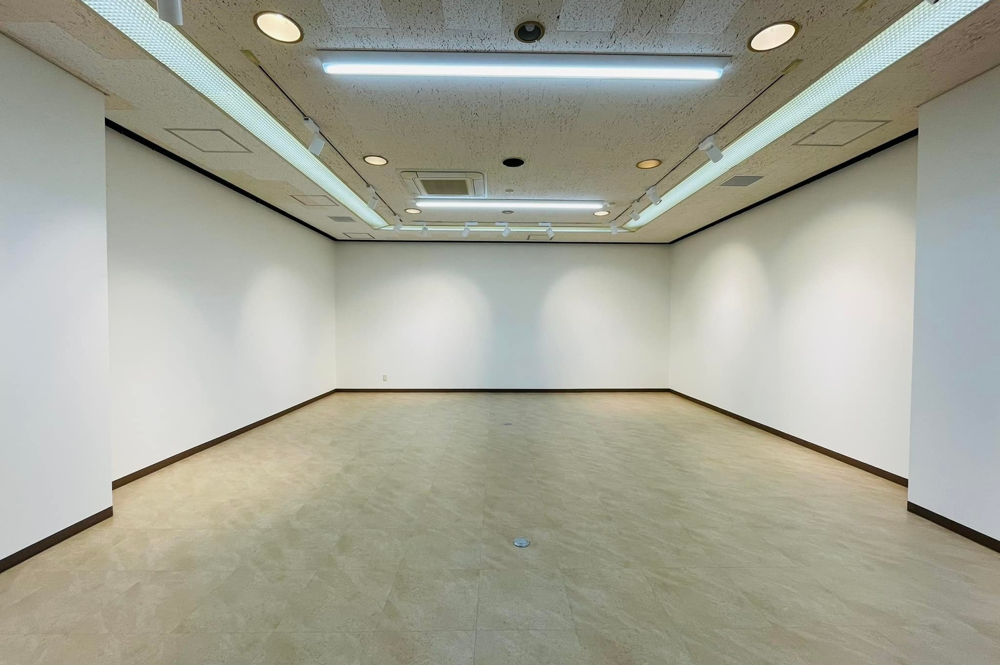
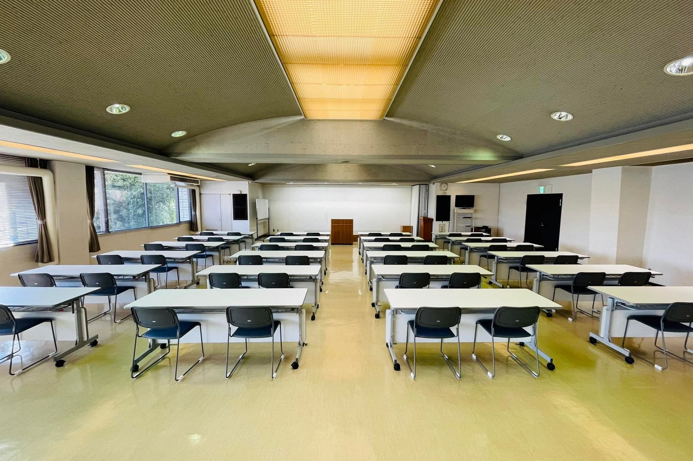
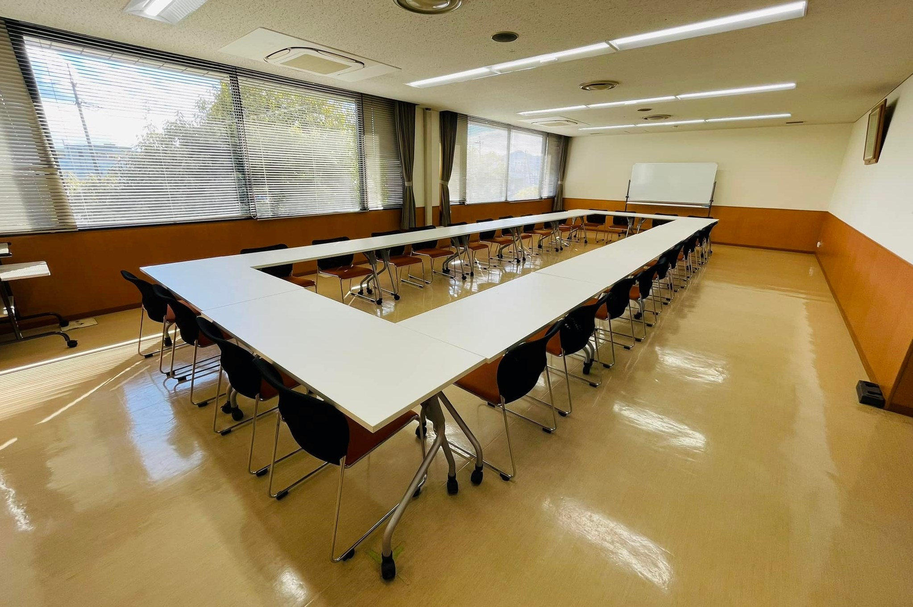
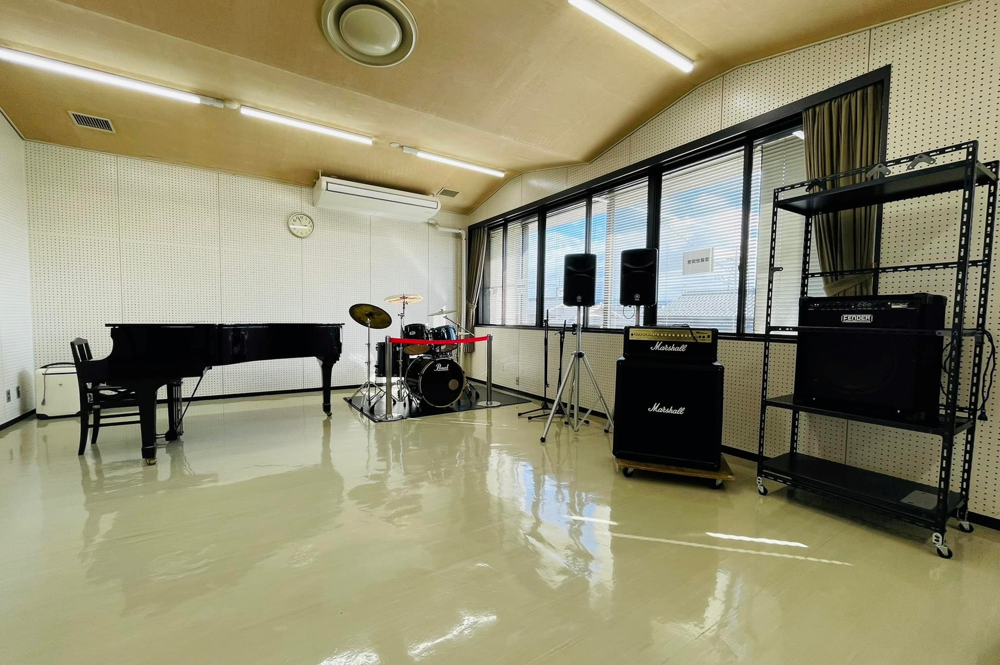
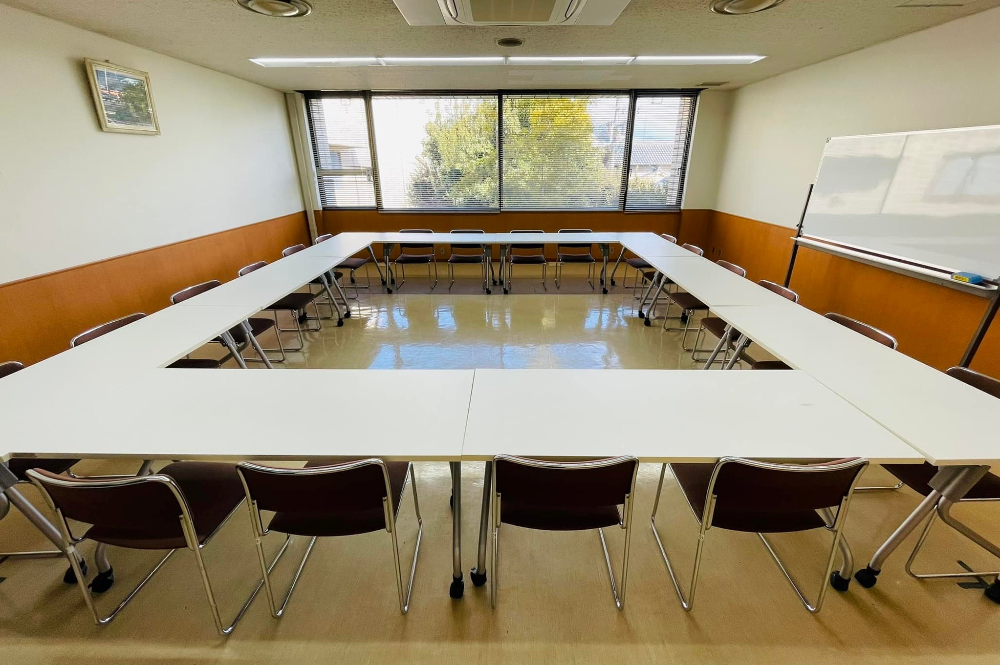
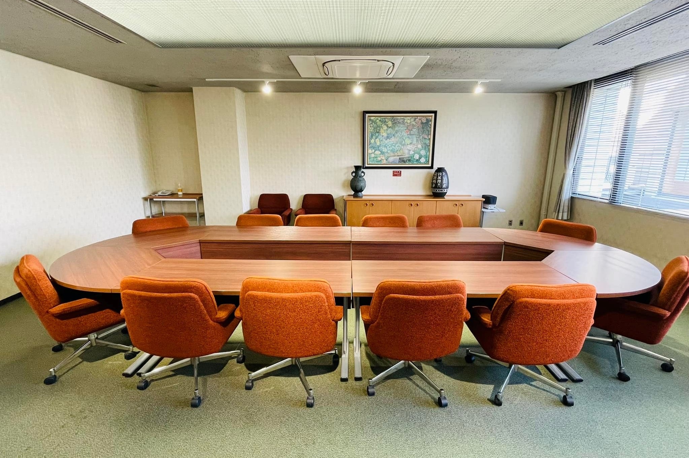
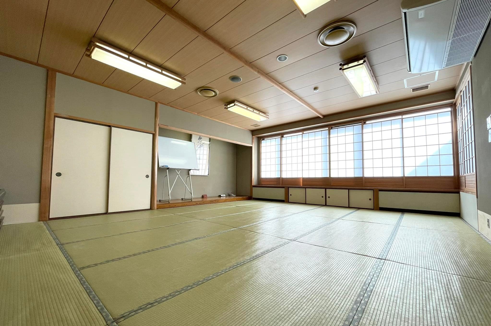

施設案内
各施設のご案内
大ホール
|
大ホール1314人収容の多治見市内で唯一の大規模プロセニアム型ホールです。本格的なプロ公演ができる舞台を備えており、発表会や練習目的にも幅広くご利用いただけます。 |
|---|---|
小ホール
|
小ホール
402人収容のプロセニアム型多目的ホールです。 |
展示室Ａ（２３４㎡） |
展示室Ａ（２３４㎡）
大小２つの展示室を用意。 |
展示室Ｂ（８２㎡） |
展示室Ｂ（８２㎡）
大小２つの展示室を用意。 |
大会議室（２５０.６㎡） |
大会議室（２５０.６㎡）
収容人員１５０人の大会議室は、音響設備、スクリーンを備えており、講演会や懇親会など大規模向けの会議室です。 |
練習室１（６８.９㎡） |
練習室１（６８.９㎡）
収容人員２８人の練習室１は、各種研修など中規模向けの会議室です。 |
練習室２（５９.９㎡） |
練習室２（５９.９㎡）
防音設備が整い、音楽練習の場としてご利用いただけます。 |
練習室３（４８.２㎡） |
練習室３（４８.２㎡）
収容人員２０人の練習室３は、少数のミーティングなどに最適な会議室です。 |
練習室４（４８.２㎡） |
練習室４（４８.２㎡）
１４人様まで着席可能な円卓テーブルを囲む練習室４は、他のお部屋とは趣が異なる、重厚な造りの会議室です。 |
和室（２１畳） |
和室（２１畳）２１畳の和室は、日本舞踊やヨガなどの文化活動のほか、机を出して会議を行うこともできます。 |
各施設の詳細
大ホール
1314人収容の多治見市内で唯一の大規模プロセニアム型ホールです。本格的なプロ公演ができる舞台を備えており、発表会や練習目的にも幅広くご利用いただけます。
仕様
| 客席数 |
固定席1,298席（うちオーケストラピット席116席）、車いす席6席、親子席10席 平面図・概要PDF |
|---|---|
| 舞台 |
間口19m 奥行14ｍ 高さ8m 客席からの高さ1ｍ |
| 残響時間 | 保留 |
| 楽屋 |
楽屋１（30.8㎡）、楽屋2（30.8㎡）、楽屋3（14.5㎡）、楽屋4（14.5㎡）、楽屋5（13.2㎡）、リハーサル室（57.4㎡）、主催者控室（14.5㎡） ※楽屋の2と3は和室 ※リハーサル室と主催者控室は小ホールと共有楽屋 |
| 備考 |
「舞台のみ」および「練習・リハーサル目的」の利用について 本番を伴わない「舞台のみ」および「練習・リハーサル目的」の利用は、予約受付開始日（利用１年前の月の初日）午前9時に行う「利用調整会」が終了し、本番の予約が確定後に 受付開始となります。
※公開リハーサルやコンクールの事前練習を主目的とした関係者のみの演奏会等、 これに類すると判断される内容も含まれます。
※ただし本番を伴う「舞台のみ」および「練習・リハーサル目的」の利用は初日午前9時 の時点で申込可 （例）本番前日または本番の1週間前の仕込み・リハーサルで「舞台のみ」を利用 |
小ホール
402人収容のプロセニアム型多目的ホールです。ピアノ発表会、講演会、小編成のコンサートなどに最適です。ステージと客席とが一つになれる使いやすい規模のホールです。
仕様
| 客席数 |
ワンスロープ形式 固定席390席、車いす席4席、親子席8席席 平面図・概要PDF |
|---|---|
| 舞台 |
間口10ｍ、奥行8.5ｍ、高さ5.5ｍ 客席からの高さ90cm |
| 残響時間 | 保留 |
| 楽屋 |
楽屋6（31.4㎡）、リハーサル室（57.4㎡）、主催者控室（14.5㎡） ※リハーサル室と主催者控室は大ホールと共有楽屋 |
| 備考 |
「舞台のみ」および「練習・リハーサル目的」の利用について 本番を伴わない「舞台のみ」および「練習・リハーサル目的」の利用は、予約受付開始日（利用１年前の月の初日）午前9時に行う「利用調整会」が終了し、本番の予約が確定後に 受付開始となります。
※公開リハーサルやコンクールの事前練習を主目的とした関係者のみの演奏会等、 これに類すると判断される内容も含まれます。
※ただし本番を伴う「舞台のみ」および「練習・リハーサル目的」の利用は初日午前9時 の時点で申込可 （例）本番前日または本番の1週間前の仕込み・リハーサルで「舞台のみ」を利用 |
展示室Ａ
大小２つの展示室を用意。規模や内容によって使い分けることができます。
仕様
| 広さ |
約17ｍ×13ｍ 天井までの高さ 約3ｍ 平面図・概要PDF |
||||||||||||||||
|---|---|---|---|---|---|---|---|---|---|---|---|---|---|---|---|---|---|
| 定員 | 50名 | ||||||||||||||||
| 専用備品 | 長机（幅180cm）20台、椅子50脚、ホワイトボード、展示ワイヤーセット | ||||||||||||||||
| 使用可能電力 | 最大６０A | ||||||||||||||||
| 使用用途 |
展示会
※ダンス・音楽利用の可否（主なもの)
|
||||||||||||||||
| 備考 |
展覧会を主目的とする利用を最優先とします。販売会や会議、音楽利用などは、展覧会目的の利用を妨げない場合のみ許可します（定期的な練習利用はご遠慮ください）。 中央に2本の柱があります。 |
展示室Ｂ
大小２つの展示室を用意。規模や内容によって使い分けることができます。
仕様
| 広さ |
約12ｍ×6.5ｍ 天井までの高さ 約3ｍ 平面図・概要PDF |
||||||||||||||||
|---|---|---|---|---|---|---|---|---|---|---|---|---|---|---|---|---|---|
| 定員 | ２５名 | ||||||||||||||||
| 専用備品 | 長机（幅150cm）10台、椅子25脚、ホワイトボード、展示ワイヤーセット | ||||||||||||||||
| 使用可能電力 | 最大６０A | ||||||||||||||||
| 使用用途 |
展示会
※ダンス・音楽利用の可否（主なもの)
|
||||||||||||||||
| 備考 | 展覧会を主目的とする利用を最優先とします。販売会や会議、音楽利用などは、展覧会目的の利用を妨げない場合のみ許可します（定期的な練習利用はご遠慮ください）。 机の利用は20台を上限とします。それを超える場合は展示室Aをご利用ください。 |
大会議室
音響設備、スクリーンを備えており、講演会や懇親会など大規模向けの会議室です。
仕様
| 広さ |
約18ｍ×13ｍ 机と椅子の配置はスクール式 （レイアウト変更可） 平面図・概要PDF |
||||||||||||||||
|---|---|---|---|---|---|---|---|---|---|---|---|---|---|---|---|---|---|
| 定員 | 150名（椅子のみの場合200名） | ||||||||||||||||
| 専用備品 | 長机（幅180cm）50台、椅子200脚、 演台、司会台、花台、音響設備（ワイヤレスマイク２本、有線マイク１本）、マイクスタンド（卓上式２本、スタンド式２本）、ホワイトボード、アップライトピアノ、常設スクリーン（幅280cm）、吊り下げ看板（幅181×高さ60cm）2枚、DVD投影用テレビ、ステージ（幅360×縦170×高さ30） | ||||||||||||||||
| 使用可能電力 | 最大６０A | ||||||||||||||||
| 使用用途 |
講演会、会議、研修
※ダンス・音楽利用の可否（主なもの)
|
||||||||||||||||
| 備考 | 会議を主目的とする利用を最優先とします。ダンスや音楽利用は、会議目的の利用を妨げない場合のみ許可します（定期的な練習利用はご遠慮ください）。 |
練習室１
各種研修など中規模向けの会議室です。
仕様
| 広さ |
約11ｍ×6ｍ 机と椅子の配置はロの字形式 （レイアウト変更可） 平面図・概要PDF |
||||||||||||||||
|---|---|---|---|---|---|---|---|---|---|---|---|---|---|---|---|---|---|
| 定員 | ２８名 | ||||||||||||||||
| 専用備品 | 長机（幅150cm）14台、椅子28脚、ホワイトボード、DVD投影用テレビ | ||||||||||||||||
| 使用可能電力 | 最大20A | ||||||||||||||||
| 使用用途 |
会議、研修
※ダンス・音楽利用の可否（主なもの)
|
練習室２
防音設備が整い、ピアノ・ドラム・アンプ類を設置した音楽練習室です。会議室としてもご利用いただけます。
仕様
| 広さ |
約10ｍ×6.5ｍ 平面図・概要PDF |
||||||||||||||||
|---|---|---|---|---|---|---|---|---|---|---|---|---|---|---|---|---|---|
| 定員 | ３０名 | ||||||||||||||||
| 専用備品 | 長机（幅180cm）8台、椅子30脚、ホワイトボード、グランドピアノ、ドラムセット、ギターアンプ（175w）、ベースアンプ（230w）、拡声装置（有線マイク２本まで）、マイクスタンド２本、譜面台20台 | ||||||||||||||||
| 使用可能電力 | 最大20A | ||||||||||||||||
| 使用用途 |
音楽
※ダンス・音楽利用の可否（主なもの)
|
||||||||||||||||
| 備考 |
・グランドピアノYAMAHA G3E（440円／1時間） ・ドラムセット（400円／1時間） ※ピアノは年2回調律をおこなっています |
練習室３
少数のミーティングなどに最適な会議室です。
仕様
| 広さ |
約7ｍ×6.5ｍ 机と椅子の配置はロの字形式 （レイアウト変更可） 平面図・概要PDF |
||||||||||||||||
|---|---|---|---|---|---|---|---|---|---|---|---|---|---|---|---|---|---|
| 定員 | ２０名 | ||||||||||||||||
| 専用備品 | 長机（幅150cm）10台、椅子20脚、ホワイトボード | ||||||||||||||||
| 使用可能電力 | 最大20A | ||||||||||||||||
| 使用用途 |
会議、研修
※ダンス・音楽利用の可否（主なもの)
|
||||||||||||||||
| 備考 |
練習室４
円卓テーブルを囲む練習室４は、他のお部屋とは趣が異なる、重厚な造りの会議室です。落ち着いた雰囲気の中、小人数の会議に最適です。
仕様
| 広さ | 約７ｍ×6.5ｍ 平面図・概要PDF |
||||||||||||||||
|---|---|---|---|---|---|---|---|---|---|---|---|---|---|---|---|---|---|
| 定員 | １４名 | ||||||||||||||||
| 専用備品 | テーブルセット一式（長机 幅150cm×4台、コーナーテーブル2セット)、 長机（幅150cm）2台、椅子14脚、ホワイトボード、常設プロジェクター、アップライトピアノ | ||||||||||||||||
| 使用可能電力 | 最大２０A | ||||||||||||||||
| 使用用途 |
会議、研修
※ダンス・音楽利用の可否（主なもの)
|
||||||||||||||||
| 備考 | 常設プロジェクター、アップライトピアノは無料でご利用いただけます |
和室
日本舞踊やヨガなどの文化活動のほか、机を出して会議を行うこともできます。
仕様
| 広さ | 21畳 約5.5ｍ×6.5ｍ 平面図・概要PDF |
||||||||||||||||
|---|---|---|---|---|---|---|---|---|---|---|---|---|---|---|---|---|---|
| 定員 | 20名 | ||||||||||||||||
| 専用備品 | 座卓（幅180cm）8台、座布団45枚、ホワイトボード、 | ||||||||||||||||
| 使用可能電力 | 最大20A | ||||||||||||||||
| 使用用途 | 会議、研修
※ダンス・音楽利用の可否（主なもの）
|
||||||||||||||||
| 備考 |